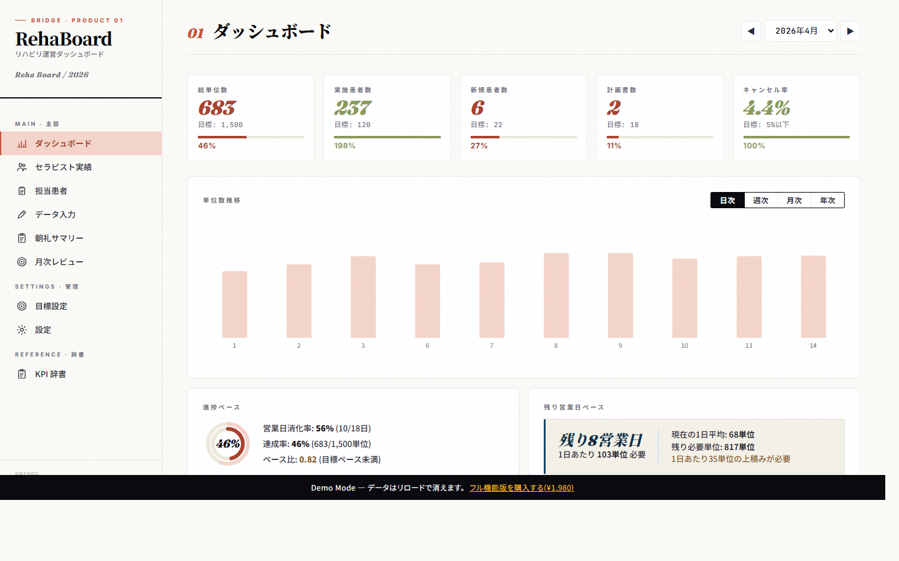
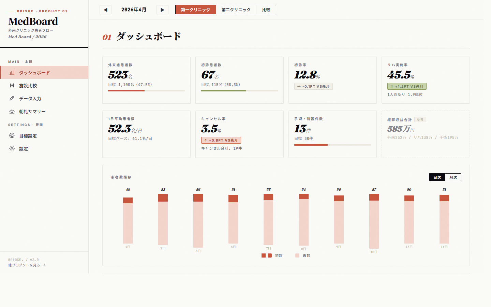
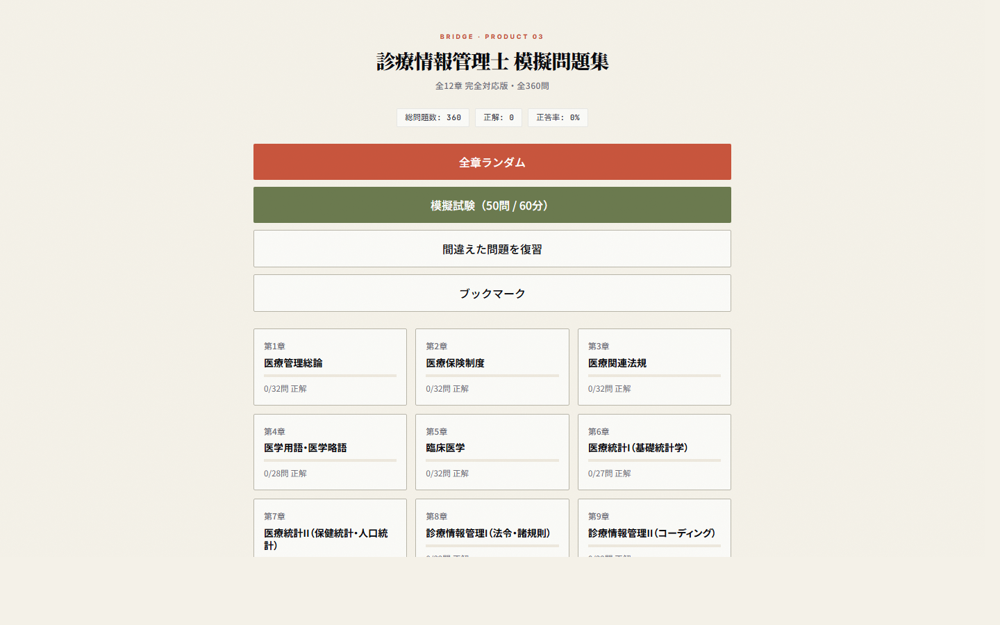
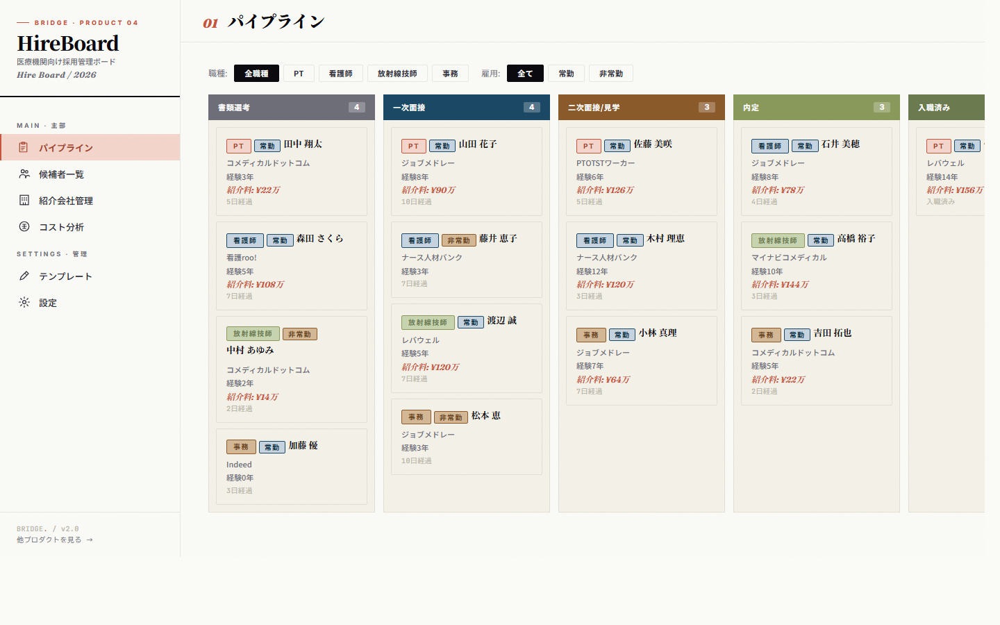
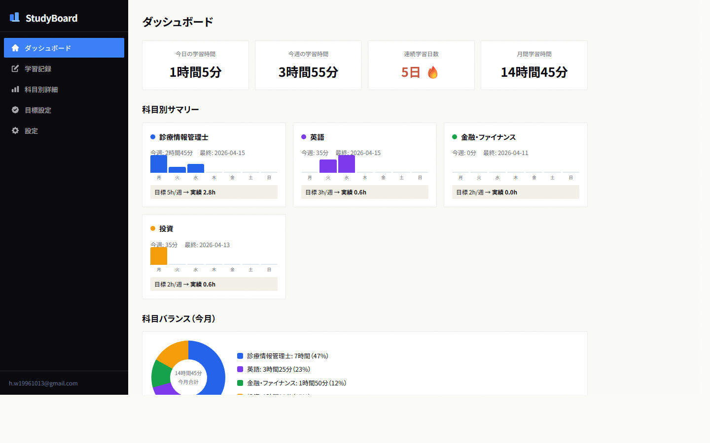
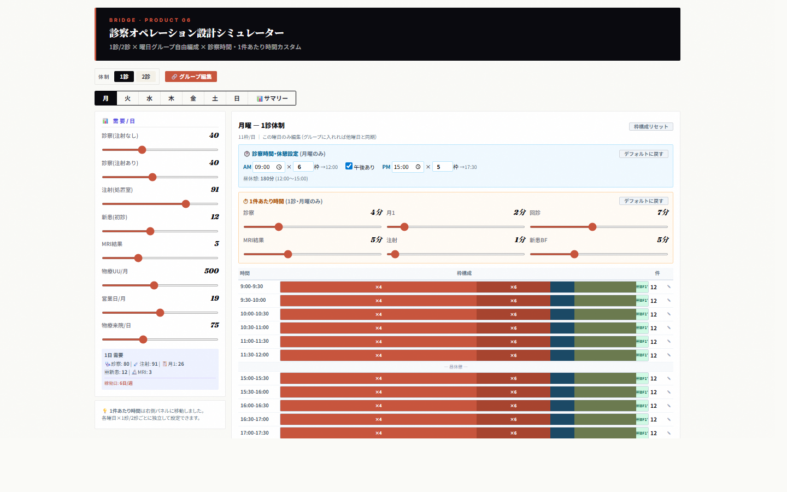
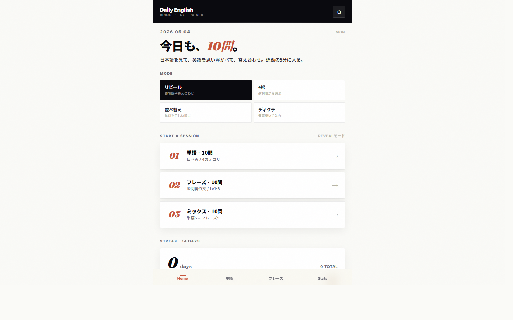
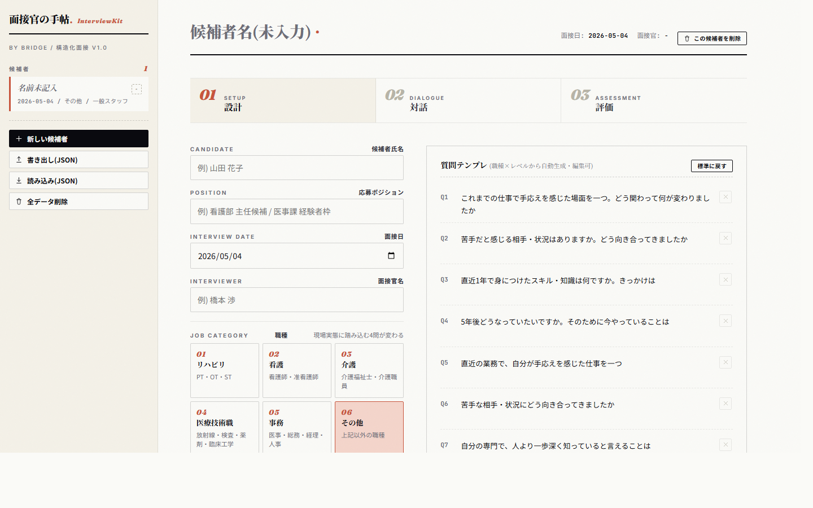

理学療法士がひとりで作る、医療の道具屋です。現場の小さな課題から、軽いプロダクトを毎日つくっています。触った現場のためだけに設計します。
机上の空論は作らない。
触ったことのない現場に、プロダクトは作れない。
数字は縛るためでなく、対話のためにある。
そして「軽さ」は正義である。
BRIDGEは、自分が最初のユーザーになる小さな道具屋です。現場で動いた人間が、自分のために作り、自分で使う。その過程をそのまま発信する。重厚なSaaSではなく、明日から使える軽いものを、ひとつずつ。
医療機関の中途・新卒・PMI採用に対応する構造化面接ツール。職種(リハ/看護/介護/医療技術職/事務)×経験レベルで質問を自動生成。事実と印象を物理的に分けて記録し、人当たりに流されない判断を支援する。
フルサイズで開くBRIDGEのプロダクトはすべて、橋本の日常業務・学習・課題から生まれています。全9本、公開中です。








日々の業務で生まれた道具のうち、現場で再利用しやすい形に整えたものを、Starter Kit として公開しています。重厚なシステム導入の前に、まず軽く始められる形で。
※ 本キットは部門運営のKPI管理を目的としたツールです。診療報酬算定の要件充足、監査対応、施設基準の充足については保証しません。各施設の責任のもと、公式情報および所管行政・関係機関のガイダンスに基づいてご判断ください。
※ 患者個人情報・スタッフ個人情報の取り扱いは、各施設の規程および関連法令に従ってください。本キットには個人情報を含めないでください。デジタル商品の性質上、原則として返金は承っておりません(詳細は商品ページの「免責」をご確認ください)。
開発の過程・現場で気づいたこと・思考の軌跡を、Note に書き残しています。プロダクトの背景は、ここを読むと一番伝わります。
外来クリニックの経営は、月次の売上だけ見ていては異変に気づけない。患者の「流れ」をシンプルな6項目で記録するだけで、数字管理が始まる、という話。
続きを読む →総単位数だけでは、新患→2回目→継続の流れは見えない。「数字で詰めない、数字で対話する」運用を、軽い道具で実現したい。リハ運営に関わってきた立場からの言語化。
続きを読む →PTがコードを書く時代の実践録。臨床経験 × AIで、現場の「面倒くさい」を3日で6つ解いた具体的な軌跡。BRIDGEの出発点になった日々の記録。
続きを読む →現場で患者を診て、大学院で論文を書き、事業会社で医療経営の数字に責任を持ち、いまBRIDGEで道具を作る。「臨床×研究×経営」を一人で繋ぐことが、設計の出発点です。
医療を持続可能にするには、経営の視点が要る。— Wataru Hashimoto
そう気づいた理学療法士が、いま道具を作っている。
朝礼で月次の数字を読み上げ、目標未達のスタッフが沈黙する朝礼を、何度も見てきた。数字を出すと現場が萎縮する。だから出さなくなる。けれど経営側は数字を求める。その間で、責任者が板挟みになる。私はそこに立ったことがある側の人間です。
道具を作って、まず自分が毎日使う。使いにくいと感じたら作り直す。現場の人が嫌がるなら作り直す。机上の空論は作らない、というのは私の信条であり、同時に、私自身を守るための仕組みでもあります。「触ったことのない現場のためにプロダクトは作れない」を出発点にしています。
数字を「責める道具」から「対話の入口」に変えたい。同じ数字を、現場と経営が同じ画面で見て、同じ言葉で議論できる。医療を持続可能にするには、その対話の運用が必要だと思っています。BRIDGEは、そのための小さな道具屋です。
重厚なシステムが入る前に、軽い道具で対話を始められる医療現場を増やしたい。
Excelの集計表よりは構造化されていて、業務システムよりは軽い。
その「中間」に、まだ届いていない現場が、たくさんあると思っています。
触ったことのない現場に、プロダクトは設計できない。デモを動かすだけでなく、自分で使い続けるのが前提です。
KPIは現場を縛る道具ではなく、改善と対話のきっかけ。「責める数字」でなく「考える数字」を設計します。
運営改善・採用・評価制度・診療報酬・現場導線。分断せず繋げて設計する。組織は分業でも、課題は繋がっている。
大企業向けの重いSaaSではなく、中小の医療機関がすぐ使える軽さを最優先。導入会議が要らないくらい軽く。
ゼロから発明するより、既にある運用を整理・型化・仕組み化して磨く。現場には既に答えがある。それを言語化するのが仕事です。
技術的に美しくても、現場の人が嫌がるなら作り直す。最後の判断はいつも「現場の人の表情」。
「困っていること」を、業務フローレベルで聞きます。会議室ではなく、できれば現場のデスクで。
提案書ではなく、いきなり動くものを作って渡します。重厚な準備期間は設けません。
しばらく実際に現場で使ってもらいます。「触らないと分からないこと」を全部洗い出します。
フィードバックを反映して、運用に乗る形に仕上げます。納品後も、月1のメンテナンスはセットで。